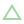

<div *ngIf="tracking" class="tracking-indicator"></div>

<div class="cytoscape-container" [id]="'cytoscapeContainer' + id"></div>
<div class="preview" [id]="'preview' + id" [ngStyle]="{'top': previewPosition[0], 'left': previewPosition[1]}">

    <div *ngIf="previewObject != null && previewObject.delta != null" title="View Diff" (click)="showHideChanges()"
        [ngClass]="{'delta-button': !previewObject.changesVisible, 'delta-button-on': previewObject.changesVisible}">
        
    </div>

    <div class="object-viewer-container">
        <object-viewer *ngIf="previewObject != null && previewObject.delta == null || (previewObject.delta != null && !previewObject.changesVisible)"
            [json]="previewObject.document != null ? previewObject.document : previewObject.relation">
        </object-viewer>
    </div>

    <div [id]="'changes' + id" class="changes" *ngIf="previewObject != null && previewObject.delta != null && previewObject.changesVisible">
    </div>
</div>